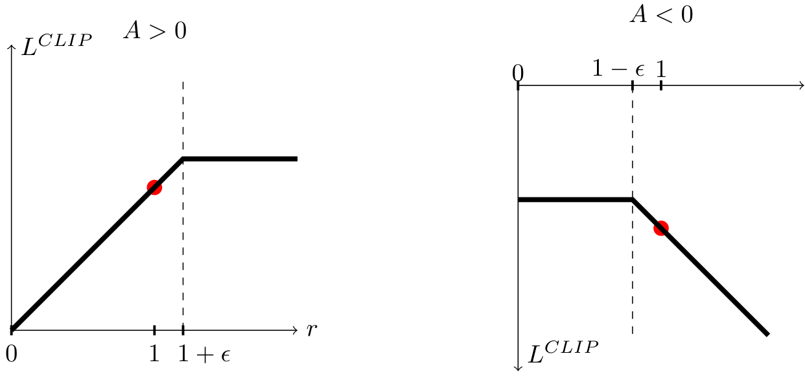
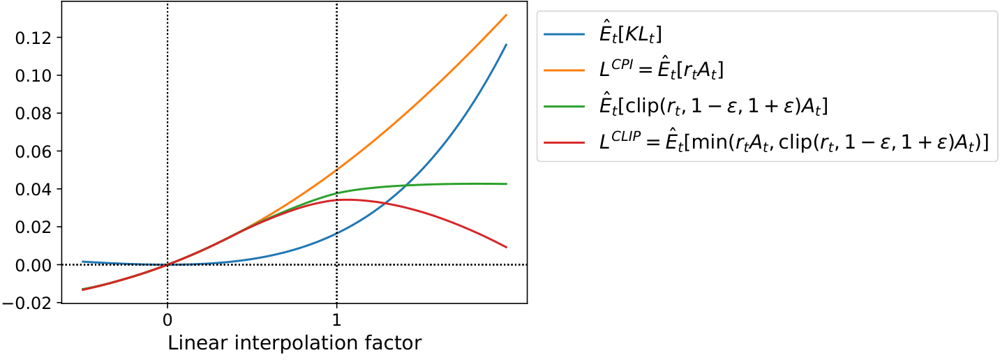
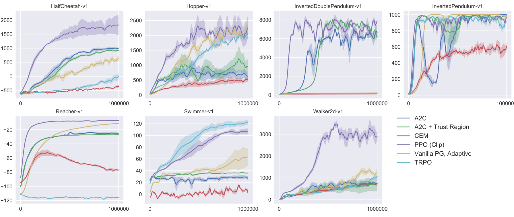
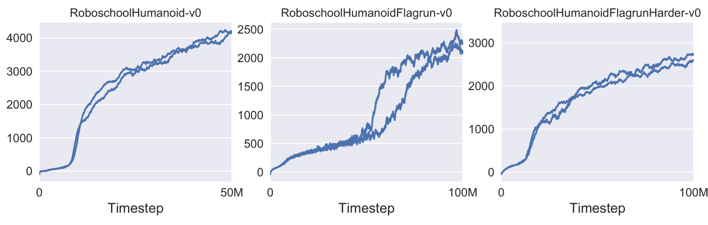
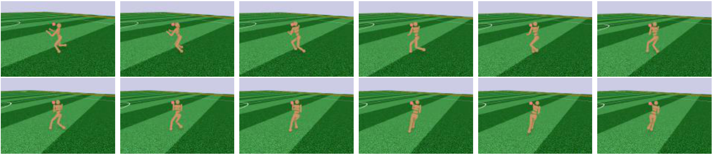
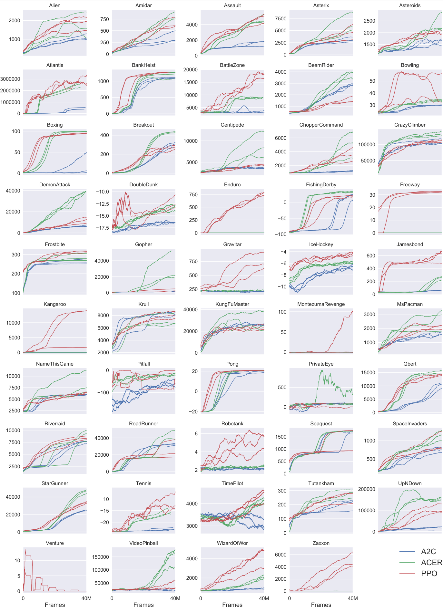

近端策略优化算法Proximal Policy Optimization Algorithms
我们为强化学习提出一族新的策略梯度方法：它们在「与环境交互采样数据」与「用随机梯度上升优化一个『替代』目标函数」之间交替。标准策略梯度方法每个数据样本只做一次梯度更新，而我们提出一个新的目标函数，允许对同一批数据做多轮小批量更新。这些新方法（我们称为近端策略优化，PPO）具有信赖域策略优化（TRPO）的一些优点，但实现起来简单得多、更通用，并且（经验上）样本复杂度更好。我们的实验在一组基准任务上测试 PPO，包括模拟机器人运动与 Atari 游戏，结果表明 PPO 优于其他在线策略梯度方法，并在样本复杂度、简单性与墙面时间（wall-time）之间取得了良好的整体平衡。
正文、图表与参考文献均来自源 PDF 解析结果。专业术语、模型名、数据集名与人名按要求保留原文；术语上的金色虚线表示可悬停（触屏可点按）查看中文解释。参考文献整节保留英文原文不译（原文使用方括号缩写式引用，如 [Sch+15b]，与文中引用对应）。原文用 ε 表示裁剪参数、β 表示 KL 惩罚系数，译文保留这些符号。
1 引言
近年来，针对使用神经网络函数近似器的强化学习，已经提出了若干不同方法。领先的竞争者包括深度 Q-learning [Mni+15]、「朴素」策略梯度方法 [Mni+16]，以及信赖域 / 自然策略梯度方法 [Sch+15b]。然而，在开发一种既可扩展（能用于大模型与并行实现）、又数据高效、且稳健（即在各类问题上无需调超参也能成功）的方法上仍有改进空间。Q-learning（配合函数近似）在许多简单问题上失败1且人们对其理解不足；朴素策略梯度方法的数据效率与稳健性都较差；而信赖域策略优化（TRPO）相对复杂，并且与包含噪声（例如 dropout）或参数共享（在策略与价值函数之间，或与辅助任务之间）的结构不兼容。
本文试图改进现状：引入一个算法，它获得 TRPO 那样的数据效率与可靠性能，却只使用一阶优化。我们提出一个新的、带裁剪概率比的目标，它构成对策略性能的悲观估计（即下界）。为优化策略，我们在「从策略采样数据」与「在采样数据上做若干轮优化」之间交替。
我们的实验比较了替代目标各种不同版本的性能，发现带裁剪概率比的版本表现最好。我们还把 PPO 与文献中若干先前算法做了比较。在连续控制任务上，它优于我们对比的算法。在 Atari 上，它的样本复杂度显著优于 A2C，与 ACER 相近，但实现简单得多。
2 背景：策略优化
2.1 策略梯度方法
策略梯度方法通过计算策略梯度的估计量，并把它代入随机梯度上升算法来工作。最常用的梯度估计量具有如下形式：
其中 πθ 是随机策略，Ât 是时刻 t 优势函数的估计量。这里的期望 𝔼̂t[…] 表示在「交替采样与优化」的算法中、对有限一批样本取经验平均。使用自动微分软件的实现，做法是构造一个其梯度就是策略梯度估计量的目标函数；估计量 ĝ 通过对下述目标求导得到：
虽然在同一批轨迹上对损失 LPG 做多步优化很诱人，但这样做缺乏充分理由，并且经验上常常导致破坏性的过大策略更新（见 6.1 节；结果未展示，但与「不裁剪也不加惩罚」的设置相近或更差）。
2.2 信赖域方法
在 TRPO [Sch+15b] 中，最大化一个目标函数（「替代」目标）时，对策略更新的幅度施加约束。具体来说，
这里 θold 是更新前的策略参数向量。在对目标做线性近似、对约束做二次近似之后，该问题可以用共轭梯度算法高效地近似求解。
为 TRPO 提供依据的理论实际上建议用惩罚而不是约束，即求解无约束优化问题：
其中 β 是某个系数。这是因为某个替代目标（它对状态取 KL 的最大值而非均值）构成策略 π 性能的下界（即悲观界）。TRPO 使用硬约束而不是惩罚，原因在于：很难选出一个单一的 β 值就能在不同问题上都表现良好——甚至在同一个问题内部也不行，因为问题特征会随学习进程变化。因此，为了实现「用一阶算法模拟 TRPO 那样的单调改进」这一目标，实验表明：仅仅选一个固定的惩罚系数 β 并用 SGD 优化带惩罚的目标（式 5）是不够的，还需要额外的修改。
3 裁剪的替代目标
记 rt(θ) 为概率比 rt(θ) = πθ(at | st)πθold(at | st)，于是 r(θold) = 1。TRPO 最大化一个「替代」目标：
上标 CPI 指保守策略迭代（conservative policy iteration）[KL02]，该目标最初正是在那里提出的。若无约束，最大化 LCPI 会导致过大的策略更新；因此我们现在考虑如何修改目标，以惩罚那些使 rt(θ) 偏离 1 的策略变化。
我们提出的主要目标如下：
其中 ε 是一个超参数，例如 ε = 0.2。该目标的动机如下。min 中的第一项是 LCPI。第二项 clip(rt(θ), 1 − ε, 1 + ε)Ât 通过裁剪概率比来修改替代目标，从而消除把 rt 移出区间 [1 − ε, 1 + ε] 的动机。最后我们取裁剪项与未裁剪项的最小值，因此最终目标是未裁剪目标的下界（即悲观界）。在这一方案下，我们只在「概率比的变化会让目标变好」时忽略它，而在它让目标变差时把它计入。注意在 θold 附近（即 r = 1 处）一阶意义下有 LCLIP(θ) = LCPI(θ)；然而当 θ 远离 θold 后二者就会不同。图 1 画出了 LCLIP 中的单项（即单个 t）；注意概率比 r 是在 1 − ε 还是 1 + ε 处被裁剪，取决于优势为正还是为负。

图 2 为替代目标 LCLIP 提供了另一个直觉来源。它展示了在连续控制问题上、沿近端策略优化（即我们稍后将引入的算法）得到的策略更新方向做插值时，若干目标如何变化。可以看到 LCLIP 是 LCPI 的下界，并对过大的策略更新施加惩罚。

4 自适应 KL 惩罚系数
另一种可替代裁剪替代目标、也可以与之叠加的做法是：对 KL 散度施加惩罚，并自适应地调整惩罚系数，使每次策略更新后 KL 散度达到某个目标值 dtarg。在我们的实验中，KL 惩罚的表现比裁剪替代目标差，但我们还是把它列在这里，因为它是一个重要的基线。
在该算法最简单的形式中，每次策略更新执行以下步骤：
- 用若干轮小批量 SGD 优化带 KL 惩罚的目标
LKLPEN(θ) = 𝔼̂t[πθ(at | st)πθold(at | st) Ât − β KL[πθold(· | st), πθ(· | st)]](8)
- 计算 d = 𝔼̂t[KL[πθold(· | st), πθ(· | st)]]
- 若 d < dtarg / 1.5，则 β ← β / 2
- 若 d > dtarg × 1.5，则 β ← β × 2
更新后的 β 用于下一次策略更新。在这一方案下，我们偶尔会看到 KL 散度与 dtarg 相差很大的策略更新，但它们很少见，且 β 会迅速调整。上面的 1.5 与 2 这两个参数是启发式选取的，但算法对它们并不很敏感。β 的初值是另一个超参数，但在实践中不重要，因为算法会很快调整它。
5 算法
前面几节的替代损失可以在典型策略梯度实现上做一点小改动就算出并求导。对使用自动微分的实现，只需构造损失 LCLIP 或 LKLPEN 而不是 LPG，并对该目标执行多步随机梯度上升即可。
多数用于计算方差缩减优势函数估计量的技术都会使用一个学习到的状态价值函数 V(s)；例如广义优势估计 [Sch+15a]，或 [Mni+16] 中的有限时域估计量。如果使用在策略与价值函数之间共享参数的神经网络结构，我们就必须使用一个把策略替代目标与价值函数误差项结合起来的损失函数。这个目标还可以进一步加上熵奖励以确保充分探索，如以往工作 [Wil92; Mni+16] 所建议的那样。把这些项合起来，我们得到下述目标，它在每轮迭代中被（近似地）最大化：
其中 c1、c2 是系数，S 表示熵奖励，LtVF 是平方误差损失 (Vθ(st) − Vttarg)2。
一种在 [Mni+16] 中流行起来、且很适合与循环神经网络配合使用的策略梯度实现风格是：让策略运行 T 个时间步（T 远小于回合长度），并用收集到的样本做一次更新。这种风格要求优势估计量不超出时间步 T。[Mni+16] 使用的估计量是：
其中 t 指明某条长度为 T 的轨迹片段内 [0, T] 中的时间下标。把这一选择推广，我们可以使用广义优势估计的截断版本，它在 λ = 1 时退化为式 10：
下面给出使用定长轨迹片段的近端策略优化（PPO）算法。每轮迭代中，N 个（并行）行动者各收集 T 个时间步的数据。然后我们在这 NT 个时间步的数据上构造替代损失，并用小批量 SGD（或为更好性能通常用 Adam [KB14]）优化 K 轮。
- for 迭代 = 1, 2, … do
- for 行动者 = 1, 2, …, N do
- 在环境中运行策略 πθold 共 T 个时间步
- 计算优势估计 Â1, …, ÂT
- end for
- 用 K 轮、小批量大小为 M ≤ NT 的优化，对 θ 优化替代目标 L
- θold ← θ
- end for
6 实验
6.1 替代目标的比较
首先我们在不同超参数下比较几种不同的替代目标。这里我们把替代目标 LCLIP 与几种自然的变体及消融版本做比较。
裁剪： Lt(θ) = min(rt(θ)Ât, clip(rt(θ), 1 − ε, 1 + ε)Ât)
KL 惩罚（固定或自适应）： Lt(θ) = rt(θ)Ât − β KL[πθold, πθ]
对 KL 惩罚，既可以使用固定的惩罚系数 β，也可以使用第 4 节所述、以目标 KL 值 dtarg 为依据的自适应系数。注意我们还尝试了对数空间中的裁剪，但发现性能并没有更好。
由于我们要为每个算法变体搜索超参数，我们选择了一个计算代价低廉的基准来测试这些算法，即在 OpenAI Gym [Bro+16] 中实现、使用 MuJoCo [TET12] 物理引擎的 7 个模拟机器人任务2。我们在每个任务上训练 100 万时间步。除裁剪参数 ε 与 KL 惩罚参数（β、dtarg）需要搜索外，其他超参数见表 3。
为表示策略，我们使用含两个 64 单元隐藏层、tanh 非线性的全连接 MLP，输出高斯分布的均值、标准差可变，遵循 [Sch+15b; Dua+16]。我们不在策略与价值函数之间共享参数（因此系数 c1 无关），也不使用熵奖励。
每个算法都在全部 7 个环境上运行，每个环境 3 个随机种子。我们用最后 100 个回合的平均总奖励给每次运行打分。我们对每个环境的分数做了平移与缩放，使随机策略得分为 0、最好结果为 1，然后在 21 次运行上取平均，为每个算法设置得到一个标量。结果见表 1。注意「不裁剪也不加惩罚」这一设置的分数为负，因为在其中一个环境（half cheetah）上它导致非常负的分数，比初始的随机策略还差。
| 算法 | 平均归一化得分 |
| 不裁剪也不加惩罚 | −0.39 |
| 裁剪，ε = 0.1 | 0.76 |
| 裁剪，ε = 0.2 | 0.82 |
| 裁剪，ε = 0.3 | 0.70 |
| 自适应 KL，dtarg = 0.003 | 0.68 |
| 自适应 KL，dtarg = 0.01 | 0.74 |
| 自适应 KL，dtarg = 0.03 | 0.71 |
| 固定 KL，β = 0.3 | 0.62 |
| 固定 KL，β = 1 | 0.71 |
| 固定 KL，β = 3 | 0.72 |
| 固定 KL，β = 10 | 0.69 |
表 1 连续控制基准的结果。每个算法 / 超参数设置的平均归一化得分（7 个环境、每个算法 21 次运行）。β 初始化为 1。
6.2 与连续域中其他算法的比较
接下来我们把 PPO（使用第 3 节的「裁剪」替代目标）与文献中若干被认为对连续问题有效的方法做比较。我们对比以下算法的调优实现：信赖域策略优化 [Sch+15b]、交叉熵方法（CEM）[SL06]、带自适应步长的朴素策略梯度3、A2C [Mni+16]、带信赖域的 A2C [Wan+16]。A2C 指 advantage actor critic，是 A3C 的同步版本，我们发现它的性能与异步版本相同或更好。对 PPO 我们使用上一节的超参数，取 ε = 0.2。可以看到，PPO 在几乎所有连续控制环境上都优于先前方法。

6.3 连续域展示：人形机器人奔跑与转向
为展示 PPO 在高维连续控制问题上的性能，我们在一组涉及 3D 人形机器人的问题上训练，机器人必须奔跑、转向并从地面爬起，有时还要在被立方体投掷击打的情况下完成。我们测试的三个任务是：（1）RoboschoolHumanoid：仅向前行走；（2）RoboschoolHumanoidFlagrun：目标位置每 200 个时间步随机改变一次，或每当目标达成时改变；（3）RoboschoolHumanoidFlagrunHarder：机器人被立方体投掷击打，需要从地面爬起。学到的策略的连续帧见图 5，三个任务的学习曲线见图 4。超参数见表 4。在同期工作中，Heess et al. [Hee+17] 使用 PPO 的自适应 KL 变体（第 4 节）来学习 3D 机器人的运动策略。


6.4 与 Atari 域中其他算法的比较
我们还在 Arcade Learning Environment [Bel+15] 基准上运行 PPO，并与 A2C [Mni+16] 和 ACER [Wan+16] 的调优实现比较。对这三个算法，我们都使用 [Mni+16] 中相同的策略网络结构。PPO 的超参数见表 5。对另外两个算法，我们使用为在该基准上最大化性能而调过的超参数。全部 49 款游戏的结果表与学习曲线见附录 B。我们考虑两个评分指标：（1）整个训练期间每回合的平均奖励（偏好学得快），（2）训练最后 100 个回合的每回合平均奖励（偏好最终性能）。表 2 给出各算法「获胜」的游戏数，其中胜负由三个试验上评分指标的均值决定。
| A2C | ACER | PPO | 平局 | |
| （1）整个训练期间每回合平均奖励 | 1 | 18 | 30 | 0 |
| （2）最后 100 回合的每回合平均奖励 | 1 | 28 | 19 | 1 |
表 2 各算法「获胜」的游戏数，评分指标在三个试验上取平均。
7 结论
我们提出了近端策略优化——一族策略优化方法，它们用多轮随机梯度上升来完成每次策略更新。这些方法具有信赖域方法的稳定性与可靠性，但实现起来简单得多：对朴素策略梯度实现只需改几行代码，可适用于更一般的设定（例如对策略与价值函数使用联合结构），并且整体性能更好。
8 致谢
感谢 OpenAI 的 Rocky Duan、Peter Chen 以及其他同事的富有洞见的评论。
参考文献
按原文要求，参考文献整节保留英文原文，未作翻译。原文使用方括号缩写式引用（如 [Sch+15b]），此处按原文顺序排列，与正文引用对应。
- [Bel+15] M. Bellemare, Y. Naddaf, J. Veness, and M. Bowling. “The arcade learning environment: An evaluation platform for general agents”. In: Twenty-Fourth International Joint Conference on Artificial Intelligence. 2015.
- [Bro+16] G. Brockman, V. Cheung, L. Pettersson, J. Schneider, J. Schulman, J. Tang, and W. Zaremba. “OpenAI Gym”. In: arXiv preprint arXiv:1606.01540 (2016).
- [Dua+16] Y. Duan, X. Chen, R. Houthooft, J. Schulman, and P. Abbeel. “Benchmarking Deep Reinforcement Learning for Continuous Control”. In: arXiv preprint arXiv:1604.06778 (2016).
- [Hee+17] N. Heess, S. Sriram, J. Lemmon, J. Merel, G. Wayne, Y. Tassa, T. Erez, Z. Wang, A. Eslami, M. Riedmiller, et al. “Emergence of Locomotion Behaviours in Rich Environments”. In: arXiv preprint arXiv:1707.02286 (2017).
- [KL02] S. Kakade and J. Langford. “Approximately optimal approximate reinforcement learning”. In: ICML. Vol. 2. 2002, pp. 267–274.
- [KB14] D. Kingma and J. Ba. “Adam: A method for stochastic optimization”. In: arXiv preprint arXiv:1412.6980 (2014).
- [Mni+15] V. Mnih, K. Kavukcuoglu, D. Silver, A. A. Rusu, J. Veness, M. G. Bellemare, A. Graves, M. Riedmiller, A. K. Fidjeland, G. Ostrovski, et al. “Human-level control through deep reinforcement learning”. In: Nature 518.7540 (2015), pp. 529–533.
- [Mni+16] V. Mnih, A. P. Badia, M. Mirza, A. Graves, T. P. Lillicrap, T. Harley, D. Silver, and K. Kavukcuoglu. “Asynchronous methods for deep reinforcement learning”. In: arXiv preprint arXiv:1602.01783 (2016).
- [Sch+15a] J. Schulman, P. Moritz, S. Levine, M. Jordan, and P. Abbeel. “High-dimensional continuous control using generalized advantage estimation”. In: arXiv preprint arXiv:1506.02438 (2015).
- [Sch+15b] J. Schulman, S. Levine, P. Moritz, M. I. Jordan, and P. Abbeel. “Trust region policy optimization”. In: CoRR, abs/1502.05477 (2015).
- [SL06] I. Szita and A. Lörincz. “Learning Tetris using the noisy cross-entropy method”. In: Neural computation 18.12 (2006), pp. 2936–2941.
- [TET12] E. Todorov, T. Erez, and Y. Tassa. “MuJoCo: A physics engine for model-based control”. In: Intelligent Robots and Systems (IROS), 2012 IEEE/RSJ International Conference on. IEEE. 2012, pp. 5026–5033.
- [Wan+16] Z. Wang, V. Bapst, N. Heess, V. Mnih, R. Munos, K. Kavukcuoglu, and N. de Freitas. "Sample Efficient Actor-Critic with Experience Replay". In: arXiv preprint arXiv:1611.01224 (2016).
- [Wil92] R. J. Williams. “Simple statistical gradient-following algorithms for connectionist reinforcement learning”. In: Machine learning 8.3-4 (1992), pp. 229–256.
附录 A 超参数
| 超参数 | 取值 |
| 时域（T） | 2048 |
| Adam 步长 | 3 × 10−4 |
| 轮数（epochs） | 10 |
| 小批量大小 | 64 |
| 折扣（γ） | 0.99 |
| GAE 参数（λ） | 0.95 |
表 3 用于 MuJoCo 100 万时间步基准的 PPO 超参数。
| 超参数 | 取值 |
| 时域（T） | 512 |
| Adam 步长 | * |
| 轮数（epochs） | 15 |
| 小批量大小 | 4096 |
| 折扣（γ） | 0.99 |
| GAE 参数（λ） | 0.95 |
| 行动者数量 | 32（locomotion）、128（flagrun） |
| 动作分布的对数标准差 | LinearAnneal(−0.7, −1.6) |
表 4 用于 Roboschool 实验的 PPO 超参数。Adam 步长依据 KL 散度的目标值调整。
| 超参数 | 取值 |
| 时域（T） | 128 |
| Adam 步长 | 2.5 × 10−4 × α |
| 轮数（epochs） | 3 |
| 小批量大小 | 32 × 8 |
| 折扣（γ） | 0.99 |
| GAE 参数（λ） | 0.95 |
| 行动者数量 | 8 |
| 裁剪参数 ε | 0.1 × α |
| 价值函数系数 c1（式 9） | 1 |
| 熵系数 c2（式 9） | 0.01 |
表 5 Atari 实验中使用的 PPO 超参数。α 在学习过程中从 1 线性退火到 0。
附录 B 在更多 Atari 游戏上的性能
这里我们给出 PPO 与 A2C 在更大规模的 49 款 Atari 游戏上的比较。图 6 展示三个随机种子各自的学习曲线，表 6 给出平均性能。

| A2C | ACER | PPO | |
| Alien | 1141.7 | 1655.4 | 1850.3 |
| Amidar | 380.8 | 827.6 | 674.6 |
| Assault | 1562.9 | 4653.8 | 4971.9 |
| Asterix | 3176.3 | 6801.2 | 4532.5 |
| Asteroids | 1653.3 | 2389.3 | 2097.5 |
| Atlantis | 729265.3 | 1841376.0 | 2311815.0 |
| BankHeist | 1095.3 | 1177.5 | 1280.6 |
| BattleZone | 3080.0 | 8983.3 | 17366.7 |
| BeamRider | 3031.7 | 3863.3 | 1590.0 |
| Bowling | 30.1 | 33.3 | 40.1 |
| Boxing | 17.7 | 98.9 | 94.6 |
| Breakout | 303.0 | 456.4 | 274.8 |
| Centipede | 3496.5 | 8904.8 | 4386.4 |
| ChopperCommand | 1171.7 | 5287.7 | 3516.3 |
| CrazyClimber | 107770.0 | 132461.0 | 110202.0 |
| DemonAttack | 6639.1 | 38808.3 | 11378.4 |
| DoubleDunk | −16.2 | −13.2 | −14.9 |
| Enduro | 0.0 | 0.0 | 758.3 |
| FishingDerby | 20.6 | 34.7 | 17.8 |
| Freeway | 0.0 | 0.0 | 32.5 |
| Frostbite | 261.8 | 285.6 | 314.2 |
| Gopher | 1500.9 | 37802.3 | 2932.9 |
| Gravitar | 194.0 | 225.3 | 737.2 |
| IceHockey | −6.4 | −5.9 | −4.2 |
| Jamesbond | 52.3 | 261.8 | 560.7 |
| Kangaroo | 45.3 | 50.0 | 9928.7 |
| Krull | 8367.4 | 7268.4 | 7942.3 |
| KungFuMaster | 24900.3 | 27599.3 | 23310.3 |
| MontezumaRevenge | 0.0 | 0.3 | 42.0 |
| MsPacman | 1626.9 | 2718.5 | 2096.5 |
| NameThisGame | 5961.2 | 8488.0 | 6254.9 |
| Pitfall | −55.0 | −16.9 | −32.9 |
| Pong | 19.7 | 20.7 | 20.7 |
| PrivateEye | 91.3 | 182.0 | 69.5 |
| Qbert | 10065.7 | 15316.6 | 14293.3 |
| Riverraid | 7653.5 | 9125.1 | 8393.6 |
| RoadRunner | 32810.0 | 35466.0 | 25076.0 |
| Robotank | 2.2 | 2.5 | 5.5 |
| Seaquest | 1714.3 | 1739.5 | 1204.5 |
| SpaceInvaders | 744.5 | 1213.9 | 942.5 |
| StarGunner | 26204.0 | 49817.7 | 32689.0 |
| Tennis | −22.2 | −17.6 | −14.8 |
| TimePilot | 2898.0 | 4175.7 | 4342.0 |
| Tutankham | 206.8 | 280.8 | 254.4 |
| UpNDown | 17369.8 | 145051.4 | 95445.0 |
| Venture | 0.0 | 0.0 | 0.0 |
| VideoPinball | 19735.9 | 156225.6 | 37389.0 |
| WizardOfWor | 859.0 | 2308.3 | 4185.3 |
| Zaxxon | 16.3 | 29.0 | 5008.7 |
表 6 PPO 与 A2C 在 Atari 游戏上、经过 4000 万游戏帧（1000 万时间步）后的平均最终得分（最后 100 个回合）。
图表索引
- 图 1 LCLIP 单项随概率比 r 的变化（优势为正 / 为负）（第 3 节）
- 图 2 沿策略更新方向做插值时各替代目标的变化（第 3 节）
- 图 3 若干算法在若干 MuJoCo 环境上的比较（6.2 节）
- 图 4 3D 人形机器人控制任务上的学习曲线（6.3 节）
- 图 5 RoboschoolHumanoidFlagrun 学到的策略的连续帧（6.3 节）
- 图 6 PPO 与 A2C 在全部 49 款 Atari 游戏上的比较（附录 B）
表 1 替代目标比较的连续控制基准（6.1 节）、表 2 各算法在 Atari 上「获胜」的游戏数（6.4 节）、表 3–5 超参数（附录 A）、表 6 PPO 与 A2C 在 49 款 Atari 游戏上的最终得分（附录 B）已在正文中直接排出。式 (1)–(12) 与算法 1（PPO，行动者—评论者风格）按原文位置排入正文。
本页由 Zotero 库中的 PDF 原文与 MinerU 解析结果翻译整理而成。图片为从源 PDF 中裁取的原始插图，存于同目录下 images/。参考文献保留原文，未作翻译；原文脚注按位置以悬停注释形式保留并译出。